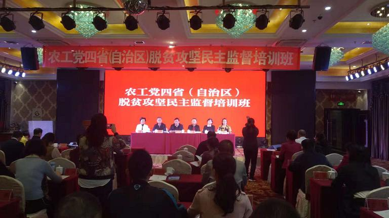

为切实做好脱贫攻坚民主监督工作，9月17日至21日，农工党赤峰市委选派2名骨干党员，参加农工党内蒙古自治区委、吉林省委、湖南省委、贵州省委在内蒙古呼和浩特市联合举办的脱贫攻坚民主监督培训班。
培训期间，认真聆听了南京邮电大学人口研究院助理研究员张耀宇，内蒙古农业大学人文学院院长、博士生导师盖志毅题为《“脱贫攻坚”阶段贫困问题的认知、解析与对策探究》和《以乡村振兴助力脱贫攻坚》的专题报告，实地调研了乌兰察布市农村牧区开展脱贫攻坚民主监督和实际脱贫情况、呼和浩特市大青山南坡生态工程建设情况及呼和浩特市新农村建设开展情况。
培训期间，学员们还围绕深度贫困地区脱贫、激发脱贫内生动力、扶贫工作作风、柔性扶贫与乡村振兴、贫困地区农民脱贫等议题进行了交流研讨，认真学习借鉴了其他地区先进经验。
此次培训内容丰富、针对性强，对农工党赤峰市委开展脱贫攻坚民主监督工作具有很好的指导作用。深入开展脱贫攻坚民主监督，要充分认识开展这项工作的重大意义，不断提升民主监督能力，挖掘资源、积极参与。要增强履职效能意识，克服形式主义，深入基层调研，把开展脱贫攻坚民主监督与加强自身建设相结合，履行好民主监督职责，实事求是提出有价值的意见建议。要重点关注健康扶贫、教育扶贫、产业扶贫、医疗扶贫、生态扶贫等领域，围绕脱贫攻坚的做法和成效进行监督，确保脱贫攻坚取得实效。